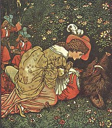

Beauty and the Beast
Overview
Beauty and the Beast is a traditional fairy tale written by French novelist Gabrielle-Suzanne Barbot de Villeneuve in 1740. It is based on the power of love, the pain of heartbreak and the prevalence of honesty.

Plot
A merchant lives in a mansion with 6 children, three sons and three daughters. All his daughters are very beautiful, but the youngest, Beauty, is the most
sought after, being kind, knowledgable and pure of heart.
In contrast, her two sisters are spoilt, selfish and vain. When their father is away, they taunt Beauty, treating her like a servant.
The merchant eventually loses all of his wealth in a tempest at sea, which sinks most of his merchant fleet.
He and his children are consequently forced to live in a small farmhouse and work for their living.
A few years later, the merchant discovers that one of his ships has survived, having escaped destruction.
The merchant asks each of his children if they would like him to bring them a gift. The sons ask for horses, armour and weapons, with dreams of becoming knights.
His two oldest daughters ask for clothing and jewels. Beauty, however, simply requests that her father returns home safely.
When he insists that he brings her something, she asks for a rose, as none grow near where they live.